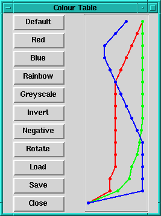

|  | The colour table maps the scaled data values to the screen display colours, represented by an integer colour index. The right-hand part of the dialogue shows the RGB composition of the table with colour index going bottom to top, and intensity from left to right. The three coloured lines are bound to the three mouse buttons as follows: left-red, middle-green, right-blue. Dragging the lines with their respective buttons will change the colour component. There is a number of standard tables which can be selected by the buttons on the left. You can also build up a collection of your own favourite tables which can be saved and subsequently reloaded with the appropriate buttons. |